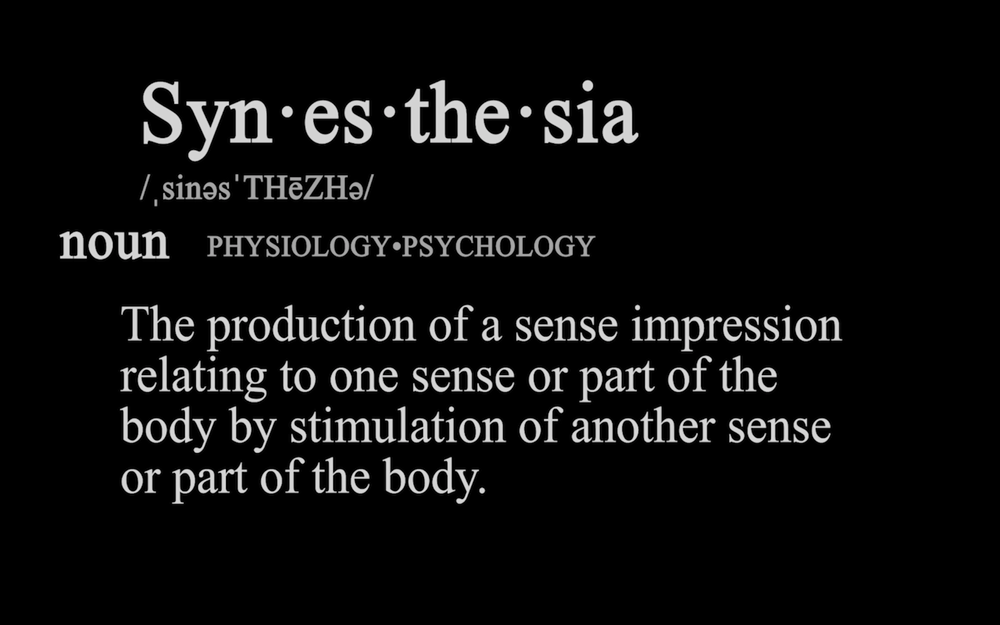

"Mess up once, it looks ugly. Mess up many times, then it becomes your style" - unkown

Please click on the small image to watch it on youtube!
This project was made during my Art-75 class and created using my DSLR camera, my iPhone, adobe premiere pro, and adobe after effects. Synesthesia is a video art project that explores the visual effects of the different senses: touch, smell, taste, and sound. This was a challenge idea-wise because it was different than any kind of videos I usually make. Here I focused more on the visuals and the mood of the scenes rather than storytelling.